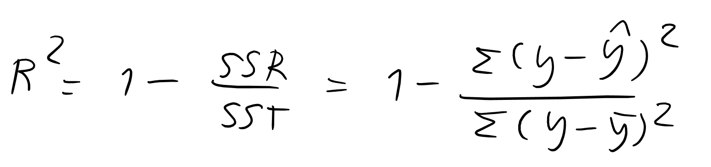

Linear Regression
draw the linear line to close with all data as much as possible
under the hood python code back to main page
in math we have formular y = mx + b , where m is slope and b is y-intercept, this is a Hypothesis function in linear regression problem, we change b and m to theta form like this
where n is a number of feature, for example in simple formular y = mx + b have 2 feature m and b, we can simplify this formular in form Theta transpose dot with X
we can find the Theta by Normal Equation and Gradient Descent.
How we know the Theta we found is good ? , we can evaluate by cost function :
function that measure the different between y_pred and y_true (every Hypothesis function has own cost function) in this algorithm is mean squared error (MSE) :
m is number of the data, y is a True labels and y_hat is a Predicttion labels, purpose is minimize cost fuction (is called Global minimum)
Normal Eqution
fine the θ value that minimizes the cost function, this solution perform better when have little data (less than 100 instances)
import numpy as np
np.random.seed(42)
X = 2*np.random.rand(100,1) # rand = [0,1] shape = 100,1
y = 4+3*X + np.random.randn(100,1) # randn = standard noramal
X_b = np.c_[np.ones((100,1)),X] # X0 = 1 for matrix multiplication
theta_best = np.linalg.inv(X_b.T.dot(X_b)).dot(X_b.T).dot(y)
this will get theta = 4.214 and 2.77 that close to y = 4 + 3X + Guassian noise
(Gaussian noise is a type of random noise that has a probability density function (PDF) that is defined by a normal distribution with a mean of zero.)
we get θ = 4.214 and 2.77 because noise made it hard to find θ = 4 and 3
Gradient Descent
the idea of Gradient descent is start with random weight and bias (yeah just random, if lucky will find the minimum point) then find what direct is lower by Calculus (derivative).
suppose you are lost in the mountains in a dense fog. you can only feel slope by your feet. if you have exactly step(learning rate) you can quickly go downhill. example formular for 2 features
we start with random theta then find the slope and go to the negative way (to the minimum point) each step decide by Learning Rate (alpha in picture), if large will jump across the minimum point if small will take a long time or cannot jump out of local minima
type of Gradient descent
Batch Gradient Descent : to implement Gradient Descent, need to compute the gradient of the cost function, all the training data is taken into consideration to take a single step(actaully, Full Gradient Descent would a better name)
Stochastic Gradient Descent : main problem with Batch GD is it uses the whole training set to compute the gradeints at every step, which makes it very slow when is large scale. Stochastic GD picks a random instance in the training set at every step and compute the gradients based on that single instance.
but Stochatic will bounce around, so finally parameters values are good, but not optimal. but its will jump out of local minimum to find global minimum. This process is akin to simulated annealing. The function that determines the leraning rate at each iteration is called Learning Schedule
Mini-batch Gradient Descent : compute the gradient on small random sets of instance. Mini-batch have advantage over SGD is that you can get performance boost from GPUs.
- will walking closer to minimum than SGD
- but suffer from go out local minima
Python code
when we train model must have 3 set train validation and test set but i will skip for now.
LinearRegression model
from sklearn.linear_model import LinearRegression
linear_model = LinearRegression()
linear_model.fit(X,y)
linear_model.intercept_, linear_model.coef_ # 4.215 ,2.770
#predict point 0 and 2
linear_pred = linear_model.predict(np.array([0,2]).reshape(-1,1))
linear_pred # 4.215, 9.75532293
Stochastic Gradient Descent model
from sklearn.linear_model import SGDRegressor
#tol is a tolerance will stop if (loss > best_loss - tol)
#eta0 is The initial learning rate
SGD_model = SGDRegressor(max_iter=1000, tol=1e-3, eta0=.1)
SGD_model.fit(X,y.ravel()) # change y to 1d array
SGD_model.intercept_, SGD_model.coef_ #4.211, 2.774
#predict point 0 and 2
sgd_pred = SGD_model.predict(np.array([0,2]).reshape(-1,1))
sgd_pred # 4.211, 9.759
see what is better
plt.figure(figsize=(10,6))
plt.scatter(X,y, s=5, color='orange')
plt.plot([0,2],linear_pred, label='linear model', color='blue')
plt.plot([0,2],sgd_pred, label='SGD model', color='black')
plt.legend(fontsize=14);
it's the same line (but if not, what model is perform better)
print(f'linear model : {linear_model.score(X,y):.6f}')
print(f'SGD model : {SGD_model.score(X,y):.6f}')
linear model : 0.769274
SGD model : 0.769272
this is R^2 score(r-squared) if close to 1 model is perform better, linear model slighly perform better

ssr( Residual sum of squares ) , sst(Total sum of squares)
see more information:
- LinearRegression
- SGDRegressor
back to main page